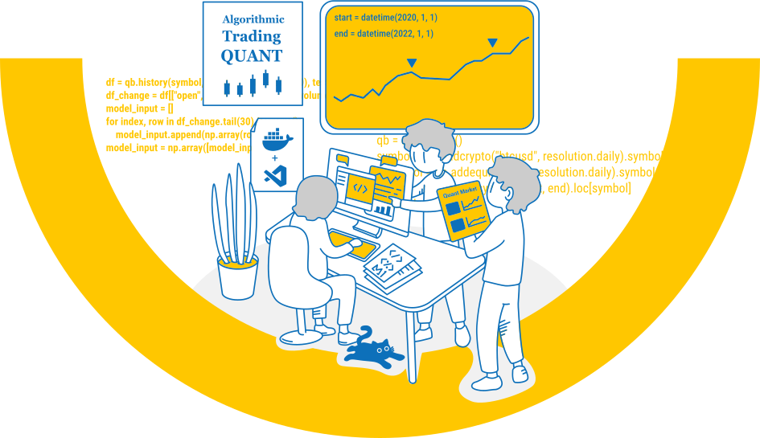

CHERRY QUANT OPEN PLATFORM
The Cherry Quant Open Platform aims to bridge the gap between algorithm developers and investors, making algorithm trading highly accessible and simple. Cherry Quant Open Platform is supported by TONGYANG Systems—a global IT solution provider specialized in the financial industry for about 30 years.
